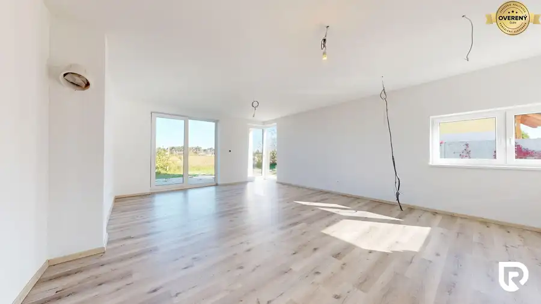
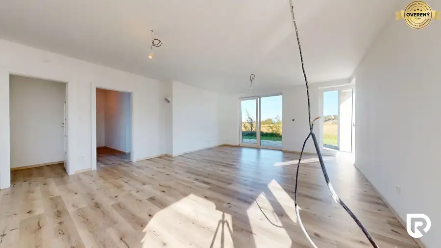
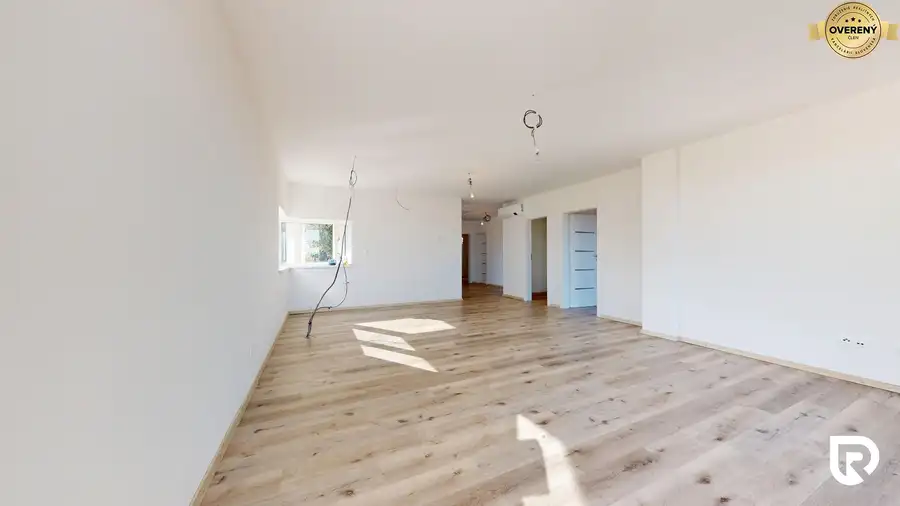
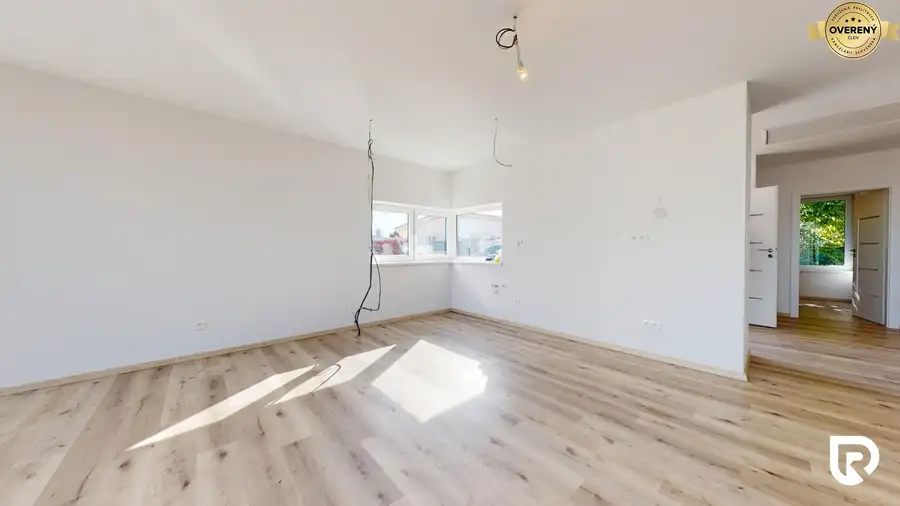
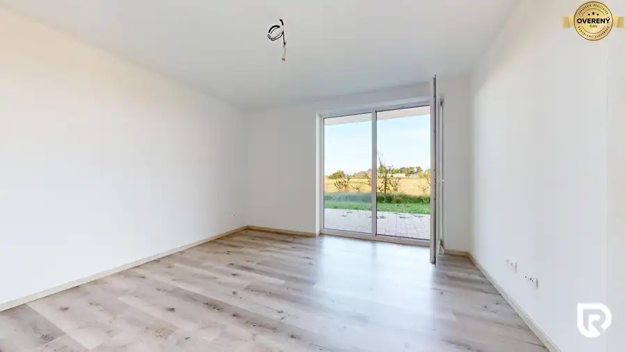
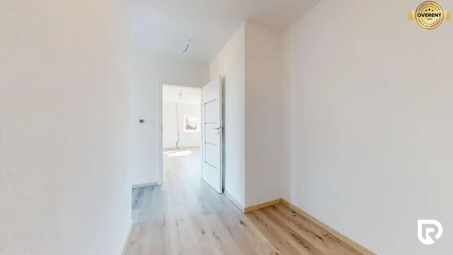

4-izbový rodinný dom 108m2 + pozemok 471m2 | Senec
Senec







- Dispozícia4-izbový
- Plocha108 m²
- Stavholopriestor
- Vlastníctvoosobné
- Energetická triedaA
O nehnuteľnosti
RadoReality
Vám ponúka na predaj
moderný a priestranný
4-izbový rodinný dom v
tichej slepej uličke
na hranici mesta Senec a obce Veľký Biel. Táto lokalita ponúka pokojné rodinné prostredie s komunitným charakterom, kde máte dostatok súkromia a zároveň výbornú dostupnosť do Bratislavy. Dom je ideálnou voľbou pre rodiny, ktoré hľadajú pohodlné a úsporné bývanie s dôrazom na kvalitu a detail.
Virtuálna obhliadka tu:
https://my.matterport.com/show/?m=tDPTmPKGEUJ
Rodinný dom s
úžitkovou plochou 108 m²
sa nachádza na pozemku s výmerou 471 m². Bol skolaudovaný v roku 2023, nebol
nikdy obývaný
a je pripravený na
okamžité nasťahovanie
. Použité kvalitné materiály, dôkladné vyhotovenie a moderné technológie z neho robia
nízkonákladovú novostavbu
s energetickým certifikátom A+.
Dispozícia domu je premyslená tak, aby spĺňala všetky potreby modernej rodiny. Dominantou je priestranná obývacia izba prepojená s kuchyňou a priamym vstupom na
veľkú terasu o výmere 30 m²
, z ktorej dve tretiny sú prestrešené – ideálne miesto na relax, grilovanie alebo rodinné posedenia. K dispozícii sú tri samostatné spálne, pričom v hlavnej spálni sa nachádza šatník. Dom má dve kúpeľne – jedna je vybavená sprchovým kútom, WC, a má prípravu na vaňu. Samozrejmosťou je aj samostatné WC a technická miestnosť. Praktickým bonusom je
pochôdzna povala
s výmerou približne 20 m², ktorá poskytuje dostatok úložného priestoru. Parkovanie je zabezpečené priamo na pozemku
pre dve autá.
Dom je vybavený
modernými technológiami
, ktoré zabezpečujú vysoký komfort bývania. Kúrenie je
elektrické podlahové s termostatom v každej miestnosti
, o príjemnú klímu počas leta sa stará
centrálna klimatizácia
a v obývačke je pripravená
predpríprava na krb
. Plastové okná s trojsklom a 7-komorovým profilom, zateplenie 10 cm polystyrénom a kvalitné vinylové podlahy prispievajú k výbornej tepelnej izolácii a
nízkym nákladom
na prevádzku. Dom disponuje aj elektrickým bojlerom, kamerovým systémom, predprípravou na alarm a optickým pripojením T-Com.
Nechýbajú ani riešenia pre efektívne hospodárenie s vodou. Dom má vlastnú
vrtanú studňu
s hĺbkou 21 metrov a
zbernú nádrž na dažďovú vodu
s objemom 10 000 litrov, ktorá je ideálna na závlahu záhrady. Odpad je riešený formou
žumpy
. Vďaka týmto technickým riešeniam má dom nízke mesačné náklady, ktoré sa pri dvojčlennej domácnosti pohybujú okolo
150€/mesačne
.
Lokalita je jednou z veľkých výhod tejto nehnuteľnosti. Nachádza sa v pokojnej časti Senca, mimo hlavných ťahov, čo zaručuje bezpečné a tiché prostredie. Zároveň ponúka kompletnú občiansku vybavenosť – obchody, školy, škôlky, športoviská aj lekárske služby sú v dostupnej vzdialenosti. Len pár minút od domu sa nachádzajú známe Slnečné jazerá, ideálne na kúpanie, vodné športy, rybolov či oddych pri vode. Oblasť je obľúbená aj medzi cyklistami – ponúka cyklotrasy smerom na Bratislavu, Pezinok či Šenkvice, ktoré vedú prevažne mimo rušných ciest a sú ideálne na aktívny oddych.
V prípade záujmu o detailnejšie informácie alebo obhliadku pozemku ma neváhajte kontaktovať:
Rastislav Horňák
RADO Reality Group
Tel.:
E-mail:
Uvedená cena je konečná, pokiaľ sa zmluvné strany nedohodnú inak a nenavyšuje sa o odmenu sprostredkovateľa, v cene je zahrnuté právne poradenstvo, vyhotovenie kúpnych zmlúv, hypotekárne poradenstvo a uhradenie správneho poplatku za návrh na vklad do katastra nehnuteľností.
RADO Reality Group je ocenená Realitnou úniou ako najlepšia realitná kancelária na Slovensku za rok 2022. Okrem iného sme držiteľmi ďalších 4 prestížnych ocenení.
Parametre
- Rozloha pozemku
- 305 m²
- Zastavaná plocha
- 166 m²
- Celková rozloha
- 471 m²
- Úžitková plocha
- 108 m²
- Poschodie
- neuvedené
- Počet izieb
- 4
- Vlastníctvo
- osobné
- Stav
- holopriestor
- Status
- aktívne
- Odvoz odpadu
- áno - separovaný
- Voda
- studňa
- El. napätie
- 230/400V
- Plyn
- nie
- Kanalizácia
- žumpa
- Internet
- optika
- Kúpeľňa
- vaňa a sprchovací kút
- Vykurovanie
- vlastné - elektrické
- Terasa
- áno - 1
- Parkovanie
- vlastné vyhradené
- Inžinierske siete
- áno
- Postavené z
- Zmiešané
- Zariadenie
- nezariadený
- Zateplený objekt
- áno
- Krb
- predpríprava
- Klimatizácia
- centrálna
- Energetický certifikát
- A
- Bezbariérový prístup
- áno
- Okná
- plastové
- Terén
- rovina
- Prístupová cesta
- neupravená cesta
- Pripravené na výstavbu
- vydané stavebné povolenie
- Novostavba
- áno
- Dátum zverejnenia
- 2026-07-08
Kde to je
Mohlo by Vás zaujímať
 BytNové
244 900 €3-izbový byt 80m2 | I. Bukovčana - DNV
Devínska Nová Ves, Bratislava
3-izbový77 m²1. podlažie
BytNové
244 900 €3-izbový byt 80m2 | I. Bukovčana - DNV
Devínska Nová Ves, Bratislava
3-izbový77 m²1. podlažie
 Rodinné domyNové
721 400 €4-izbový dom 390m2 + pozemok 1000m2 | Limbach
Limbach
4-izbový390 m²
Rodinné domyNové
721 400 €4-izbový dom 390m2 + pozemok 1000m2 | Limbach
Limbach
4-izbový390 m²
 BytNové
249 000 €3-izbový byt 70m2 + loggia 3m2 | Eisnerova
Devínska Nová Ves, Bratislava
3-izbový70 m²7. podlažie
BytNové
249 000 €3-izbový byt 70m2 + loggia 3m2 | Eisnerova
Devínska Nová Ves, Bratislava
3-izbový70 m²7. podlažie